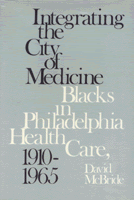

<body bgcolor="#FFFFFF" text="#000000" link="#0000FF" vlink="#CC0000" alink="#CC0000"><center><hr width="350" size="1" align="center" noshade>The origins and influence of black medical professionals and allied health workers in Philadelphia<hr width="350" size="1" align="center" noshade><p><a href="https://cdcshoppingcart.uchicago.edu/Cart/ChicagoBook.aspx?ISBN=9780877225461&&PRESS=temple" target="_top">Buy this book!</a> | <a href="https://cdcshoppingcart.uchicago.edu/Cart/Cart.aspx?PRESS=temple" target="_top">View Cart</a> | <a href="https://cdcshoppingcart.uchicago.edu/Cart/Cart.aspx?PRESS=temple" target="_top">Check Out</a></p><p></p></center><!--none//--><h1>Integrating the City of Medicine</h1>
<H2>Blacks in Philadelphia Health Care, 1910-1965</H2>
<h3>David McBride</h3>
<P>cloth 0-87722-546-X $51.50, Nov 88, <FONT COLOR=#990033>Out of Stock Unavailable</FONT>
<BR> 320 pp
</P><p>Racial minority groups have been generally overlooked in recent studies of the evolution of contemporary American medical institutions and health care. David McBride traces the structural development and social and political experiences of one urban community of black medical providers during a period of unprecedented change in health care, race relations, and politics. <I>Integrating the City of Medicine</I> reveals the origins and influence of black medical professionals and allied health workers in Philadelphia&#151a leading center of the nation�s medical heritage, hospital resources, and medical education.
<p>McBride characterizes the experience of Philadelphia blacks in the medical profession as a transition from a period of wide-scale isolation during the early twentieth health efforts through the Depression, the book examines the technological and political forces that at first sustained the self-enclosed black medical community but later dispersed it into Philadelphia�s mainstream health care system.
<BR>&nbsp;<H2>About the Author(s)</H2>
<P><b>David McBride</b> is Assistant Professor in the Departments of History and Afro-American and African Studies at the State University of New York at Binghamton.</P>
<BR><H2>Subject Categories</H2>
<p><A HREF="/tempress/american.html" TARGET="_top">American Studies</a>
<BR><A HREF="/tempress/african.html" TARGET="_top">African American Studies</a>
</p>
<p align="center"><a href="https://cdcshoppingcart.uchicago.edu/Cart/ChicagoBook.aspx?ISBN=9780877225461&&PRESS=temple" target="_top">Buy this book!</a> | <a href="https://cdcshoppingcart.uchicago.edu/Cart/Cart.aspx?PRESS=temple" target="_top">View Cart</a> | <a href="https://cdcshoppingcart.uchicago.edu/Cart/Cart.aspx?PRESS=temple" target="_top">Check Out</a></p><p><font face="Arial" size="1"><a href="copyright.html" onMouseOver="window.status='Web Copyright Policy';return true;" onMouseOut="window.status=''" title="Web Copyright Policy">&copy;</a> 2015 <a href="http://www.temple.edu" target="new" onMouseOver="window.status='Link to Temple University home page';return true;" onMouseOut="window.status=''" title="Link to Temple University home page">Temple University</a>. All Rights Reserved. http://www.temple.edu/tempress/titles/567_reg.html</font></p>